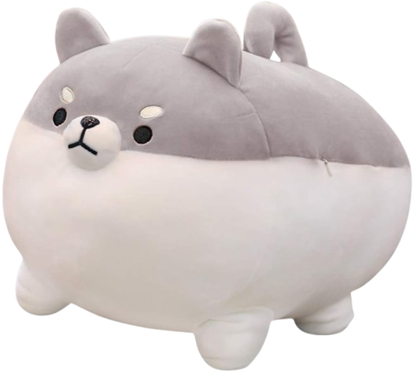
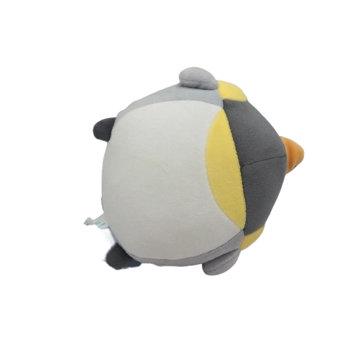

Our sons and I thought it was time for Dad to finally check off one of your childhood dreams...
owning your very own pufferfish! It is going to be a lot of work and patience,
so we wanted to help get you started with things we need to know before getting you your very first puffer ❤.


psssst..dad..dad..dad.. down here.. mom did all the research but we made this entire website by ourselves. nod nod.
no help from mom...sho don't tell mom we told you hehe.. WE LOVE YOU DAD 😊 ❤
Where to Get the Puffer 🐡
We looked for some places near my bebe, so here are my top picks >:).
Enrichment: tongs feeding, scatter feeding, safe decor to explore.
Avoid feeder fish; they can introduce disease and poor nutrition.
Health & Safety
Acclimate slowly; avoid rapid shifts in salinity or temperature.
Quarantine new livestock when possible.
Toxin note: Some puffers carry tetrodotoxin internally—admire, don’t handle.
Stress: A puffed puffer is stressed; focus on calm, clean water.
Setup Checklist
Use this interactive checklist—your progress is saved on this device.
From Kim 💙
To my bebe: I'm sorry we couldn't go and physically get a puffer for your birthday, my love 🥺.
But I'm super excited to bring one home with you next time I come to visit ❤.